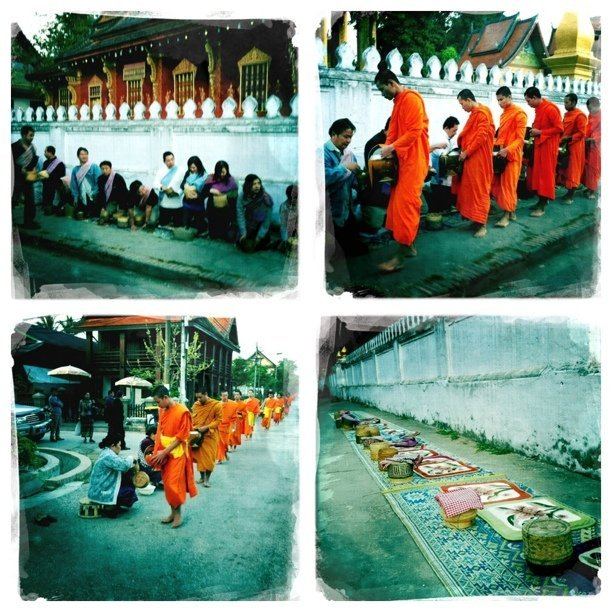

Fri, 11 Feb 2011 01:23:00 · laos · vnsavitri
morning alms giving procession in luang prabang

Morning Alms-giving Procession in Luang Prabang, Laos.
The ancient tradition of giving morning alms to the monks in Luang Prabang (Northern Laos) has been carried out for hundred of years. The ceremony usually started around dawn as early as 5.30AM everyday, or soon after the drum beat and the morning chant heard from the temple. Hundreds of monks will then walk barefoot to receive alms from local folks. The monks walking route is originated from their temple (and monastery) and then go for couple of blocks around the neighbourhood where locals are ready with their offerings.
Alms usually consist of sticky rice (staple food for Lao people), assortments of sweets, snacks and other small bites.
However, not wanting to spoil the picturesque scene (or semi-romantic idea), unfortunately, this supposedly sacred ritual has turned into tourist attraction with many photographing the monks up-close (too close sometimes!), thus disregarding the fact that such act is considered impolite. In Laos tradition, one’s head shan’t be in higher position than the monk’s, hence the seating when giving alms.